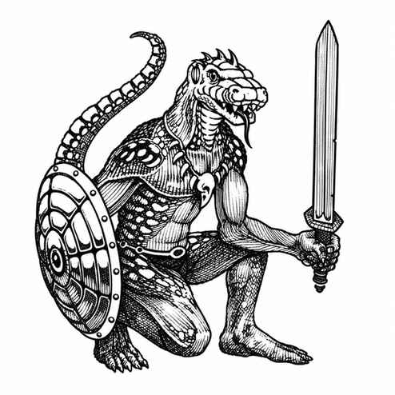

蜥蜴人 · Lizard Man
 |
|
蜥蜴人是半水生生物，以空气呼吸，但有 35% 概率完全水下生活；它们在水下巢穴中也会开凿不被水淹没的洞穴。它们通常出没于沼泽、湿地及类似环境，以粗略的部族形式聚居。蜥蜴人是杂食动物，但往往更喜欢人肉；它们会伏击人类，把尸体与幸存者一并掳走，带回巢穴举行粗野而骇人的盛宴。
约十分之一的部族已发展出更高的文明形态。这些蜥蜴人住在简陋棚屋中，使用盾牌（护甲等级 4），并会在近身前投掷带倒钩的飞镖（射程 3 寸，伤害 1–4）或标枪（伤害 1–6）。进入近战后，它们使用木棒，按晨星的伤害计算。
蜥蜴人会说自己的语言。